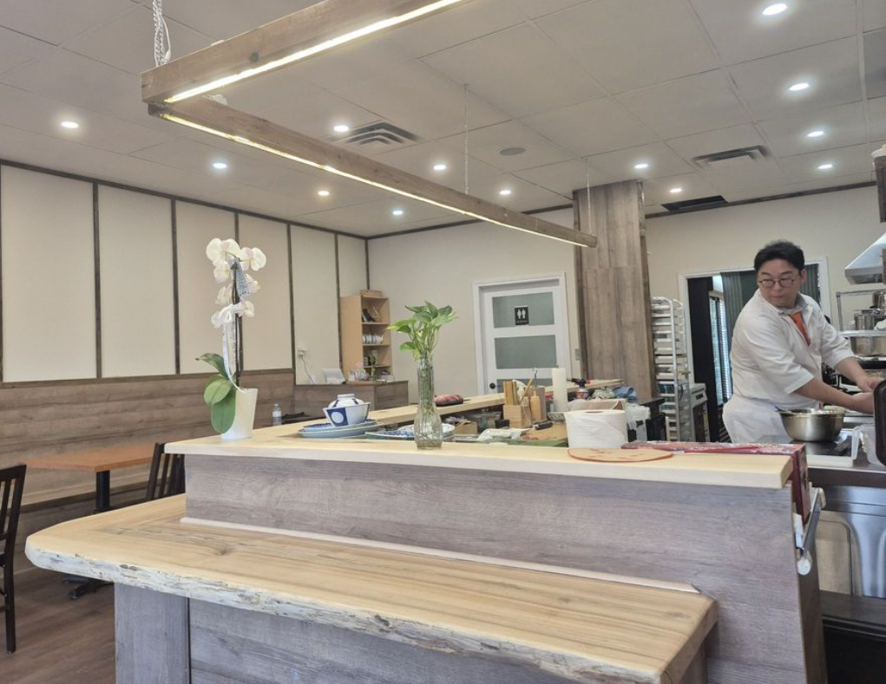

Origin
Built around a single piece of wood.
The counter at Kotori is one slab of two-hundred-year-old hinoki, oiled by hand once a season. Everything in the room was placed in relation to it — the lights, the chair-back angles, the distance the chef must reach to set down a plate.
It is not large. It cannot be made larger. We think of the room as the third member of the kitchen.
"The wood teaches us pace. Slow enough to notice; fast enough to be warm."

— 01 The Counter